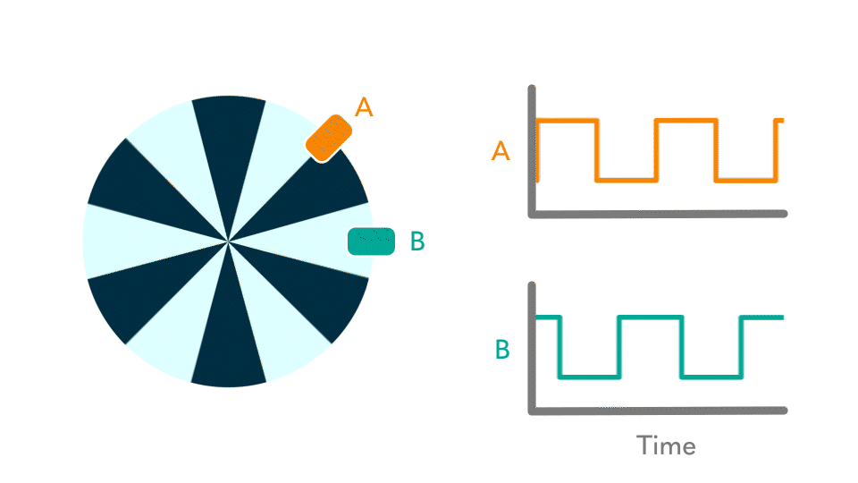
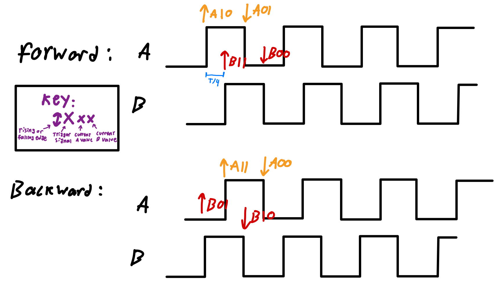
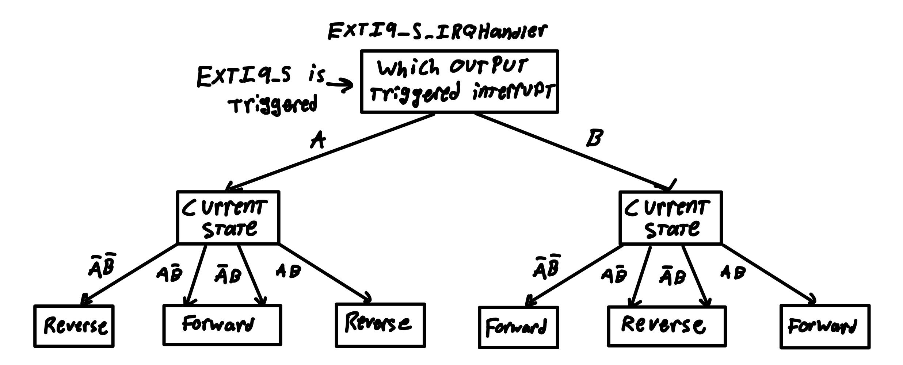
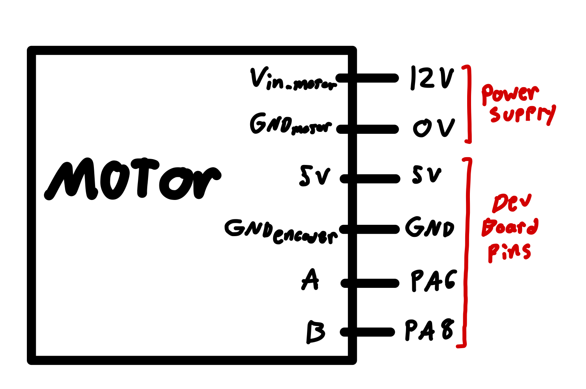

Lab 5: Interrupts
Time Spent: ~10 hours (lost track of time)
Main Goals
This project aimed to measure the speed of a motor with a quadrature encoder using hardware interrupts rather than polling in software. The specs include that the update rate should be at least 1Hz and that the speed is reported as zero when the motor is not spinning.
Design
The motor encoder is a disk with alternating regions that cause its two outputs, A and B, to alternate between high and low 120 times per revolution of the motor, where B is phase-shifted 90 degrees behind A. The idea is that after initializing everything, the main loop would only be responsible for calculating the motor speed based on some global variable set by the interrupt handler.
The benefits of using interrupts over polling are twofold. First, interrupts use fewer processor resources because the edge detection and timing are all done with hardware rather than software and the interrupt code only runs when it needs to. The other advantage is in precision. Since the time between interrupts is on the order of microseconds, there is a real possibility that polling with the CPU would miss an edge, resulting in a halfinf of measured frequency. Also, the definition is limited to however long it takes the main loop to run. In this case, the main loop is very quick, but in other applications, this could be a bigger issue (or even this application if I’d chosen to implement averaging).
interrupts
When writing interrupts, it’s important to make them as short as possible, since the program might not behave as intended if the interrupt handler is still running when an interrupt is observed.
The minimum that the handler has to do (because of information available within the handler that is not easily accessible from the main loop) is to report the time since the last interrupt and whether the motor is going forward or backward. Since the interrupt is triggered on the rising and falling edges of both signals, it is triggered 4 times (equally spaced) per pulse. Therefore, the time between interrupts, T_interrupt is given by T_interrupt = T_pulse/4, where T_pulse = T_revolution/120.
On the MCU, several interrupts are available from GPIO inputs. I chose to use one that is triggered by several pins (EXTI_9_5_IRQ which is triggered by pins 9-5) so that the same interrupt can be run for both A and B inputs.
The time between interrupts was tracked using one of the basic timers on the MCU (TIM6). The reset handler is responsible for reading and resetting this timer which was configured to have a 1us base unit. If the motor is in reverse, this value is negated before being stored to a global variable.
Due to the encoder’s design, the motor’s direction can be determined if we only know which signal triggered the interrupt and the state of both A and B inputs. Figure 1b shows the 8 cases that could trigger an interrupt.


Whether the interrupt was triggered by a rising or falling edge is not directly available, but can be determined from the current value of the interrupt trigger signal (if A triggered the interrupt and is high, it was a rising edge, if A triggered the interrupt and is low, it was a falling edge, etc.). This logic was applied to make the following flowchart to find motor direction.

This flowchart was implemented using if statements in the interrupt handler.
main function
The main function calls all of the configuration functions before entering into a main loop. The loop calculates rev/s and prints to the debug terminal. T_interrupt is set in seconds based on the microsecond timer value stored as a global variable in the interrupt handler.
Given that T_interrupt = T_pulse/4 = (T_revolution/120)/4 = T_revolution/ 480, rev/s = 1/(480*T_interrupt)
Lastly, the main loop checks to see if enough time has elapsed since the last interrupt that we should call the motor still. This was implemented with a second timer (TIM7) configured to have a 1ms base unit. Every time the reset handler runs, this timer is reset. The main loop checks if its value is above 1000 (meaning 1 second has elapsed since the last interrupt). If 1s elapses without an interrupt, T_interrupt is set to 0 and won’t be reset until the interrupt runs again.
Implementation
The physical implementation of this project is very simple. The motor takes up to 12V power to run, and the encoder takes 5V power. The A and B outputs of the encoder are 5V signals, so 5V tolerant GPIO pins were chosen. I chose pins PA6 and PA8 since they were available on the breakout board and 5V tolerant.

Testing
Thankfully, I didn’t run into too many problems with this lab. The first time I ran the program with the debugger, the terminal was printing the format of the rev/s string, but didn’t include the floating value. This was just a configuration error in the SEGGER and I had to enable printing floats. The other issue was something far outside of the scope of this project, where PLL could not be configured in debug mode. I spoke to Kavi about this, and he said the only solution he found was to not use PLL or not use the debugger. Since I needed the debug console to print values, I chose to use the default 4MHz clock instead of configuring PLL for 80Hz. This may result in slightly worse definition in the measurement, but it is still within spec.
Once the design worked as intended, I confirmed that the output was correct by approximating the rotation rate using a metronome app on my phone.